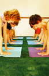

Yoga for your mind, body, and soul
Jenifer has been practicing many traditions of yoga since 1992. She has also been involved with the Iyengar Yoga Teacher Training Program at UCR since 2001. Achieving certificates in the Fundamentals of Yoga Specialized Study Program, and the Yoga Theory and Practice Certificate Program, she is well on her way to her third Yoga Teacher Training certificate. Her studies also include the Cultural Heritage of India, the History of Indian Philosophy, Philosophical History and Foundations of Yoga, Anatomy and Physiology, the Yoga Sutras of Patanjali, and the Theory and Practice of Pranayama (yogic art of breathing). Jenifer also had the honor of meeting Sri BKS Iyengar in Los Angeles during his last trip to the United States.
{kind=link}
Jenifer continues to study with Senior Yoga Instructors in Southern California, as well as attending workshops, seminars, and classes on all traditions of Yoga, Ayurveda, & Holistic Health.
In January 2006 Jen also completed the Fundamentals of Thai Yoga Massage Therapy, Soma Veda Level One under the caring guidance of Dr. Anthony B. James, LMT, ND, MDAM. She is also a member of the International Thai Therapists Association founded by Dr. James.
{kind=link}
Most recently, Jenifer has also had the honor of beginning studies in Holistic Health and Healing with teacher, and guide Jim Three Feathers. Jenifer has also received her first Reiki attunement, and is available to share the healing energy of Reiki, as well as all other healing modalities to better assist her clients, canine and human alike.
What is Yoga?
Yoga is a 5,000 year old health care system comprised of breathing techniques to calm the mind and ease stress, postures to bring balance, increase strength and muscle tone, improve flexibility, and promote an all around feeling of wellness.
{kind=link}
The word "Yoga" originates from the Sanskrit root "yuj" which means union. Yoga is not a religion, but one of the six orthodox systems of Indian Philosophy. It was collated, coordinated and systematized by Patanjali in his classical work, the Yoga Sutras.
The great advantage of yoga is that it can be practiced by anyone, irrespective of age, sex, religious background, and physical condition. All of Jenifer’s classes are designed to accommodate beginners as well as students that are more advanced. Her teaching style is drawn mainly from the Iyengar tradition, which emphasizes precision and alignment in all postures in order to protect the entire body structure. Correct body alignment allows the body to develop harmoniously in an anatomically correct way so that the student suffers no injury when practicing correctly. Her years of experience also draw from many other styles of yoga, health, and fitness.
Mr. Iyengar has also developed the use of props to help the body into the correct positions required to reap the many benefits of yoga. Props are objects like wooden blocks, chairs, blankets, and belts that help one adjust, or support oneself in the different postures so that you can work in a range of motion that is safe and effective. All poses are individualized to each person’s physical needs.
{kind=link}
Benefits of Yoga
Yoga is a therapeutic, as well as preventative science. Even the simplest of yoga positions will yield many benefits, such as bringing yourself into balance, and positively affecting us both mentally and physically. There are many benefits of yoga including overcoming health problems such as Arthritis, Sciatica Pain, Back Pain, Weight Management, Poor Circulation, Regulating Blood Pressure, Fighting Osteoporosis, Relieving Depression, Insomnia, Anxiety, Headaches, Migraines, Irritability & Mental Fatigue, Digestive Disorders, Respiratory Disorders such as Asthma, Reproductive Disorders (menstrual & menopausal), as well as boosting your Immune System, and improving concentration and focus for those with ADD/ADHD. Yoga will also help reduce stress, increase flexibility, strengthen and tone muscles, improve balance and posture, build confidence, and boost self-esteem. It is important to note that health is not just a disease-free state, but also a state of physical, mental, emotional, and spiritual well being!
What to expect in class
All of Jenifer's classes are 90 minutes long, and begin with 7-10 minutes of seated deep breathing to cleanse the body, improve posture, and refresh the mind. Next, you will be guided through a well thought out series of poses which may include any combination of standing, seated, revolving, forward bending, backward extending, inverted, or supine postures. It is important to note that you will never be forced into any pose you are not comfortable with. Progress in all poses are made as you, together with your instructor feel your body, and mind are ready. The last 20 minutes of class is comprised of restorative poses to refresh, and rejuvenate all body systems leaving you with a feeling of true inner calm, and serenity. Yoga props will be provided for you, but many practitioners prefer to purchase their own. This will also help with your home practice as well.
{kind=link}
Yoga Etiquette
Arrival: Please arrive quietly, and on time. This is a "Quiet Zone" in order to be courteous to those receiving other treatments. Thank you!
* If you arrive early, please keep classroom conversation to a minimum as some may arrive early to meditate, or to just sit quietly.
Clothing: Please wear clothing you can move in. Dress should be loose (but not revealing), stretchy, light, and comfortable. Practice is with bare feet. Please remove socks & shoes, and leave them outside the area in which you will be practicing. Please keep jewelry to a bare minimum, as it will affect your poses.
Practice: Do not force yourself into any final pose; know your own limitations. If practicing in a group, do not compete with others. Please refold blankets neatly when preparing to use them, as any creases will disturb your practice.
Food: The best time to practice yoga is on an empty stomach. Please do not eat a heavy meal within 3-4 hours before your practice. You may have a light snack 1-2 hours before your practice. No gum, or candy during yoga; bottled water only.
Scents: Please refrain from wearing perfumes or heavily scented lotions. Some people have extremely sensitive respiratory systems.
Be Courteous: Please turn off all cell phones, pagers, watches, and other gadgets before you enter the building.
Special Needs: If you have any medical needs/concerns/conditions, please see the instructor before the class. (Please arrive early)
Women: Please notify your instructor before class, as well as avoid any fully inverted poses during your menses.
Water: Please drink plenty of water! Yoga moves toxins in the body systems; water removes them!
* Please use the restroom before your yoga practice.
Schedule of Classes
| Location: | Private Yoga Studio Woodcrest Area Riverside, CA 92508 951-288-5034 |
| Times: | Monday 6:00 - 7:30pm * Monday evening classes are on going and are geared for all levels, raw beginners to more advanced yogis. Additional classes to be added soon. |
"Namaste"
In India, "Namaste," is said upon greeting someone, and also upon leaving.
The meaning is as follows...
I honor the place in you where the entire universe resides,
I honor the place in you of love, of light, of peace.
I honor the place within you where if you are in that place in you and I am in that place in me, there is only one of us.
Testimonials
Ruthann Jones
I have been a yoga student of Jenifer's for over three years; she has taught me much about yoga and how it strengthens, relaxes, and heals my body. I was tense and under much stress before I began classes, but find that I am very relaxed after yoga practice. I also work up a sweat using various muscle groups! As I have many orthopedic problems and limitations, Jenifer adapted asanas (poses) and designed vinyasas (several poses linked together) to allow me to practice on my own. This also taught me how different asanas strengthened and eased the pain in my joints. I practiced with several other yoga instructors prior to discovering Jenifer, and she is the only one to teach me to love yoga, and look forward to classes.
Ruthann Jones
Robyn Blair
I have attended Jenifer's yoga classes now for over 3 years. She is always willing to take on new physical challenges, and issues that her students might have. She is encouraging, and understanding all through the instruction of class, as well as a compassionate leader, and is constantly looking for new ways to challenge us. You can see that Jen truly loves what she does, and I am always eager to recommend her to others who are intimidated by the idea of taking up yoga. Jen makes it FUN!
Robyn Blair
www.robynblair@tarbell.com
Barbara Langford
Prior to beginning my yoga practice with Jen, I had taken Hatha yoga for about 7 or 8 years from a couple of different instructors, as well as Pilates for a couple of years. I had never taken an Iyengar yoga class before and really didn't know there were different types of yoga.
I have been practicing with Jen now for 4 years. She is very knowledgeable in all aspects of yoga, including but not limited to, yoga philosophy, types of yoga, anatomy, modifications of poses, use of props, injuries that can occur and how to prevent them, etc. She also practices a yoga lifestyle outside of class, meaning she just doesn't teach yoga for financial gain. She truly practices what she preaches, and cares about her students and their progress.
Jen has been extremely encouraging to me with my yoga practice. She knows how to push just the right amount, which makes me want to get "out of my comfort zone" and try new things, always listening to my body first. She will always keep you safe. I trust her. She is the type of teacher you want to please. She is kind to all of her students, no matter their level of experience or age. She also brings fun and laughter to a class.
Finally, Jen was instrumental in helping me find the courage to get certified as a yoga instructor through YogaFit 3 years ago. While we each teach different styles of yoga, we continue to learn from each other. Since there is no competition in yoga, we both respect the differences our styles of yoga bring. The outcome is ultimately the same; we just choose to take different paths to get there.
I consider Jen a dear friend as well as an excellent teacher.
Barbara Langford
Certified YogaFit™ Instructor
{kind=link}
{kind=link}